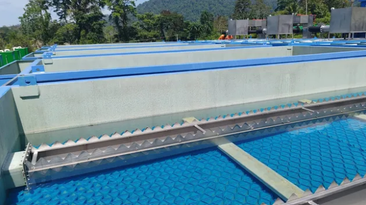
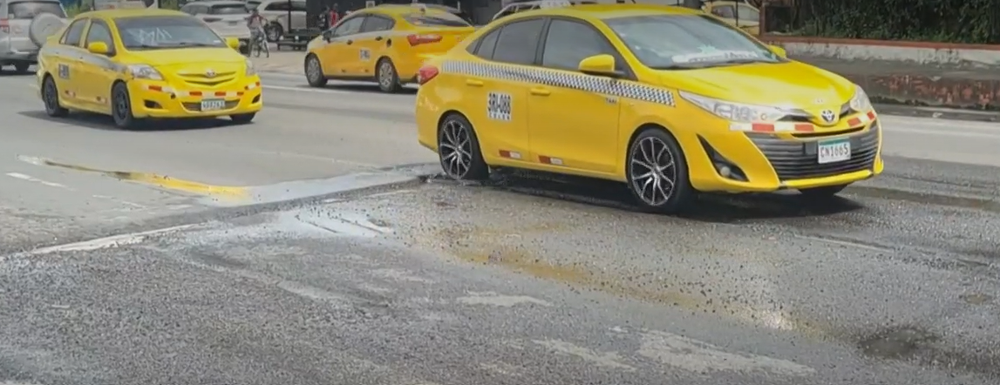
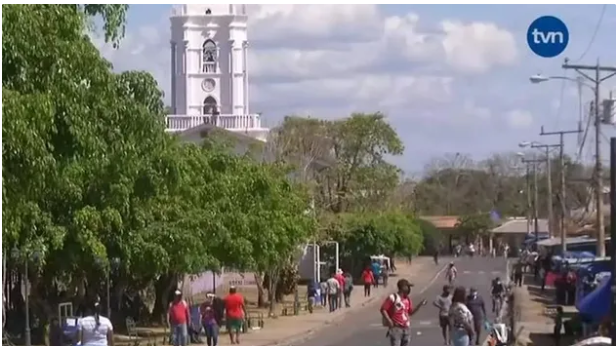
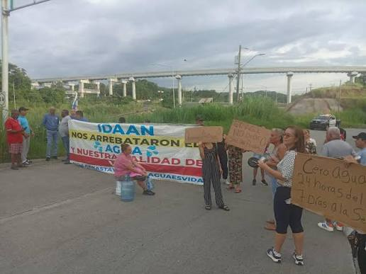
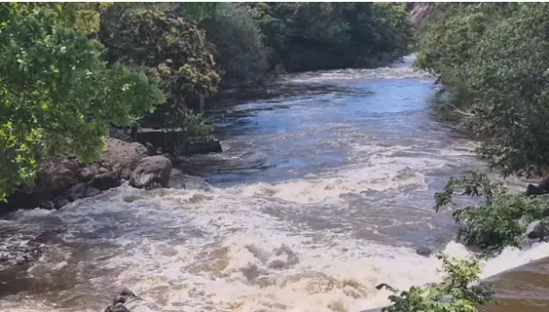

Planta potabilizadora de Las Tablas-Sibube entra en su fase final de construcción
Bocas del Toro
La obra reforzará el suministro de agua en Bocas del Toro.
Ver másMantente informado sobre las novedades, alertas y acontecimientos relacionados con el agua en Panamá.

La obra reforzará el suministro de agua en Bocas del Toro.
Ver másLa Defensoría del Pueblo aseguró que dará seguimiento a estos compromisos a fin de que se adopten las medidas necesarias que aseguren el cumplimiento del derecho al agua y a la salud de todos los habitantes.
Ver más
Los usuarios de esta importante arteria, que conecta a Colón con el resto del país, solicitaron a las autoridades una pronta intervención para evitar que las condiciones de la carretera continúen empeorando.
Ver más
Personal operativo del Instituto de Acueductos y Alcantarillados Nacionales detectó daños en una turbina que abastece a varias comunidades.
Ver más
La molestia llevó a los residentes a cerrar la tarde del miércoles 2 de septiembre la vía que conecta con la autopista Arraiján-La Chorrera, como medida de protesta para exigir respuestas a las autoridades.
Ver más
Las autoridades mantienen el llamado a los residentes de las comunidades afectadas a tomar las previsiones necesarias mientras se normalizan las condiciones en las fuentes de agua y se restablece el servicio.
Ver más